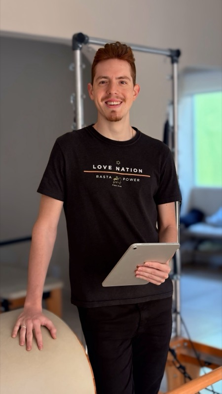
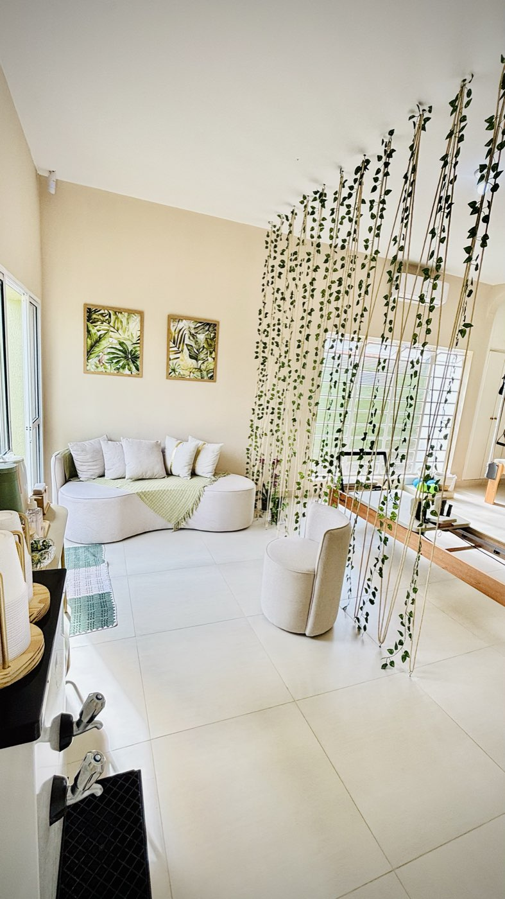
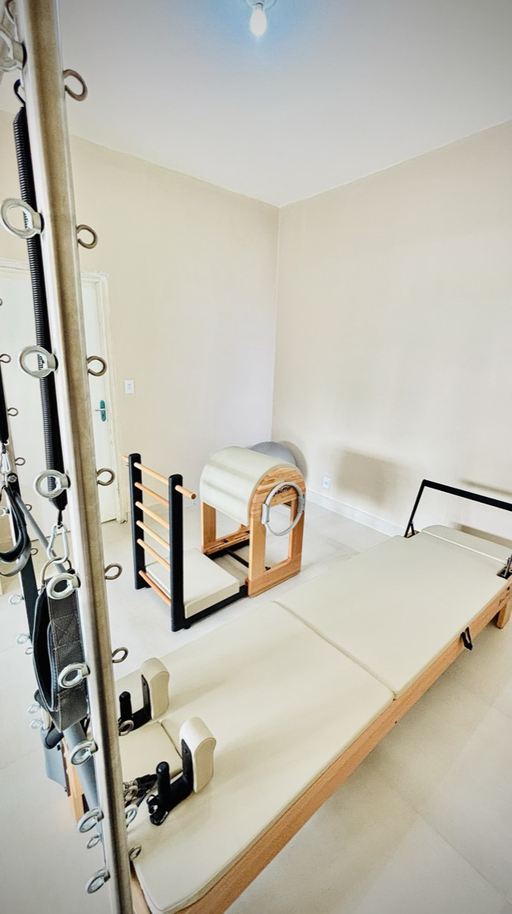
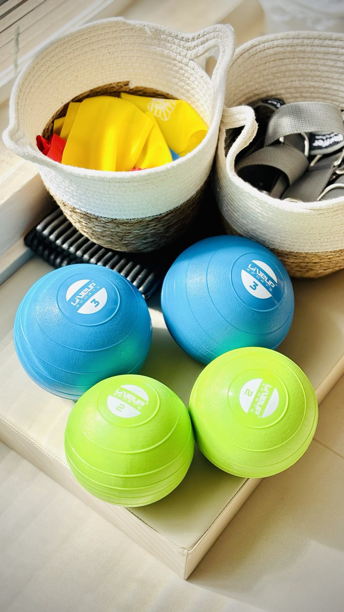
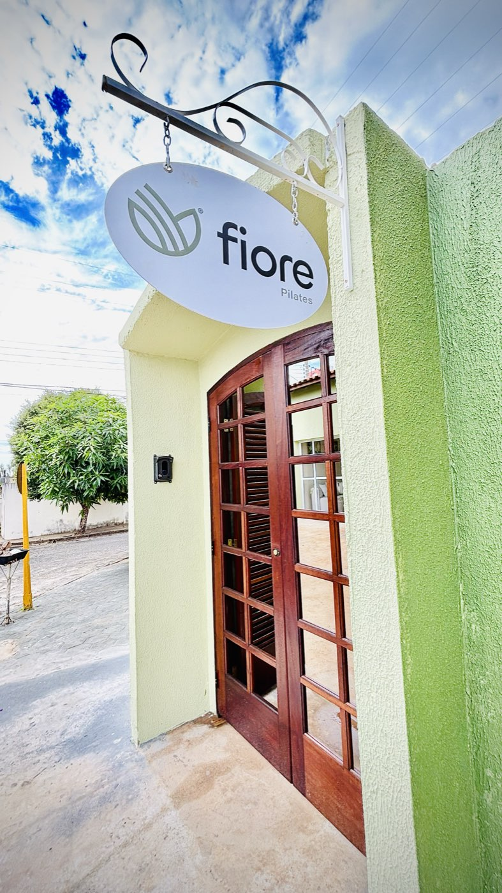

Alívio de dores
Exercícios que contribuem para o alívio de dores lombares, pélvicas e tensões do dia a dia.
Cuidamos e fortalecemos mulheres em todas as fases da vida — com um cuidado especial e individualizado para gestantes. Um espaço acolhedor, seguro e feito para você.

alunas atendidas ao longo da nossa história
são gestantes acompanhadas de perto
nota no Google, com 44 avaliações
aulas individualizadas, feitas para você
A gestação é uma jornada única — e merece um cuidado à altura. Na Fiore, cada aula é pensada para a sua fase, respeitando o seu corpo e o seu tempo. Com acompanhamento adequado, o Pilates pode ajudar no alívio de desconfortos, na consciência corporal e na preparação para o parto.
As aulas não substituem orientação médica. Inicie com a liberação do seu obstetra.
Mais do que exercício, um cuidado que se reflete em cada movimento do seu dia.
Exercícios que contribuem para o alívio de dores lombares, pélvicas e tensões do dia a dia.
Mais consciência corporal, equilíbrio e liberdade de movimento em todas as fases da vida.
Fortalecimento profundo e seguro, do core ao assoalho pélvico, com técnica e progressão.
Um respiro na rotina: respiração, relaxamento e conexão entre corpo e mente.
Disposição e qualidade de vida que acompanham você muito além das aulas.
Reabilitação e pós-parto com acompanhamento atento, respeitando o seu tempo de retorno.
Nosso diferencial são as gestantes — mas a Fiore acolhe mulheres, idosos e quem busca mais saúde e qualidade de vida.
Pré-natal individualizado, da descoberta ao pós-parto, respeitando cada fase.
Fortalecimento, consciência corporal e bem-estar em todos os momentos da vida.
Alívio de dores crônicas, correção postural e mais mobilidade no dia a dia.
Condicionamento seguro, equilíbrio e recuperação com acompanhamento próximo.

Um sonho da fisioterapeuta Raquel Cardoso, que queria criar um espaço onde cada pessoa se sentisse verdadeiramente bem cuidada. O nome “Fiore” — flor, em italiano — foi inspirado na avó de Raquel, que cultivava um jardim cheio de vida e beleza. Lembranças que até hoje inspiram cada detalhe do nosso espaço.
Mais do que um estúdio, a Fiore é um ecossistema de cuidado e excelência: pessoas, técnica e acolhimento trabalhando juntos para transformar a experiência da maternidade e da saúde da mulher.
Nossa resposta à necessidade real das gestantes: um cuidado físico e emocional, com base em ciência, experiência e empatia.
Pilates, fisioterapia pélvica e terapias manuais trabalhando em conjunto pelo seu bem-estar.
Cada gestante é acompanhada por um time preparado, atento e especializado.
Um programa em constante aprimoramento, que acompanha de perto a sua evolução.
Ser referência em saúde da mulher e gestação em Bauru, com cuidado de verdade.
Florescer é o nosso time — profissionais dedicados a acompanhar cada fase da sua jornada, com técnica e carinho.
Fisioterapeuta

Fisioterapeuta
Fisioterapeuta
Fundadora · Fisioterapeuta
Fiore Toque · Massoterapia
O Fiore Toque é o nosso espaço de terapias manuais e massoterapia, com a Rosana. Na gestação e no pós-parto, o toque terapêutico pode ajudar a aliviar tensões, relaxar e completar o seu cuidado — sempre respeitando cada fase.
Acreditamos em um cuidado moderno e organizado — sem nunca perder o calor humano. Por isso, usamos tecnologia para deixar a sua jornada mais clara, próxima e personalizada.
Cada aluna é única — e o seu plano também. Veja como cuidamos da sua jornada do começo ao fim.
Entendemos seu histórico, objetivos e necessidades em um encontro acolhedor.
Montamos um plano sob medida, respeitando o seu corpo e o seu momento.
Acompanhamos cada conquista para que você sinta o seu progresso.
Ajustamos o plano com você, sempre buscando os melhores resultados.
Elegante, sereno e acolhedor — cada detalhe foi preparado para você se sentir em casa.





“Comecei com a Raquel com 12 semanas de gestação e fomos até as 39. Ela sempre adaptou os exercícios para a gravidez e me ajudou a realizar o parto que eu queria: o parto normal.”
“Mudou a minha vida de verdade. Sofria com dores pelo corpo todos os dias. Com a Fiore descobri uma nova vida… sem dores.”
“Sempre fui sedentária e decidi fazer Pilates por causa da gestação. Nunca pensei que fosse gostar tanto! A Raquel é super atenciosa e o espaço é aconchegante. Recomendo para gestantes e não gestantes.”
“Têm me ajudado muito durante a gestação. Recomendo demais! Atenciosa e entende os limites dos alunos.”
“Local super aconchegante, excelente atendimento, ambiente familiar e organização impecável. Faz toda a diferença. Parabéns!”
“Profissional especializada e diferenciada! Essa é a minha indicação.”
Trechos de avaliações públicas de alunas. Veja todas no nosso perfil do Google.
A Fiore acredita no cuidado que vai além do estúdio. Estamos presentes na vida das famílias de Bauru, apoiando futuras mamães e levando informação de qualidade sobre saúde da mulher e maternidade.
Quer saber das próximas novidades, encontros e conteúdos para gestantes? Acompanhe a gente de perto.
Mitos e verdades, dicas e bastidores reais — todos os dias nas nossas redes.
Um espaço de referência em saúde da mulher e maternidade no Jardim Planalto.
Com acompanhamento adequado e profissional especializado, o Pilates pode ser uma prática segura na gestação. Na Fiore, cada aula é individualizada e adaptada à sua fase, respeitando os limites do seu corpo. Inicie sempre com a liberação do seu obstetra.
Não. Recebemos alunas iniciantes e experientes. Tudo começa por uma avaliação inicial individualizada, que define um plano de aula feito sob medida para você.
O momento ideal varia para cada mulher. O recomendado é iniciar com a liberação do seu médico e com acompanhamento de profissionais especializados, como a nossa equipe.
É um encontro individual em que entendemos seu histórico, objetivos e necessidades. A partir dele montamos um plano personalizado e acompanhamos a sua evolução ao longo das aulas.
Estamos na R. Baltazar Rodrigues, 4-82 — Jardim Planalto, Bauru/SP, em um espaço pensado para o seu conforto e bem-estar. Veja o mapa logo abaixo.
R. Baltazar Rodrigues, 4-82
Jardim Planalto — Bauru/SP
Seg a Sex: 6h às 20h
Sábado: 7h às 12h
Dê o primeiro passo da sua jornada de bem-estar. Agende sua avaliação inicial e venha sentir o cuidado da Fiore de perto.